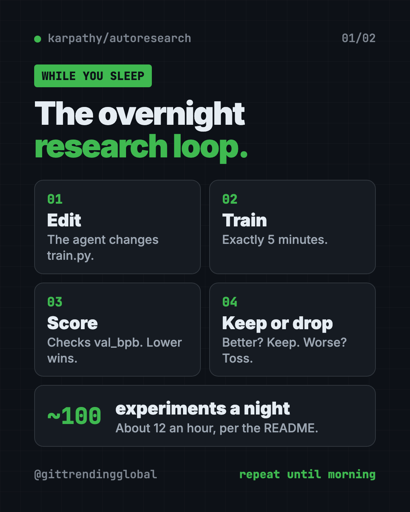
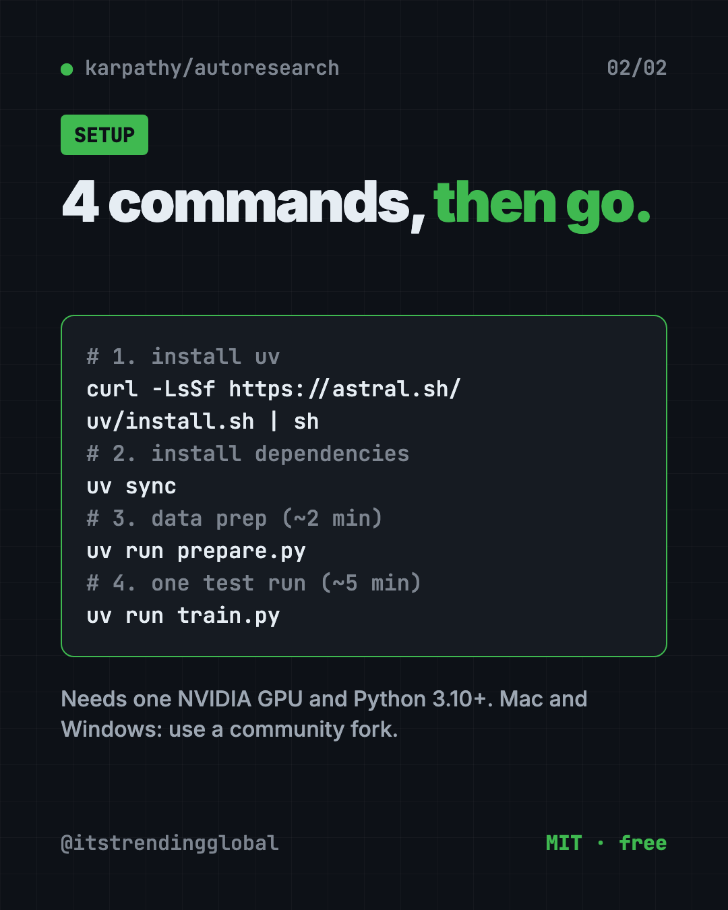

Karpathy autoresearch: AI That Runs Experiments Overnight
- Published 15 Oct 2026
- Updated 16 Oct 2026
- 7 min read
- License MIT
- By the ITG Now team
Karpathy autoresearch is a small, free project where an AI agent runs its own experiments on a tiny AI model while you sleep. It changes the code, trains for five minutes, checks the score, keeps what works, and repeats.
It comes from Andrej Karpathy, a well-known AI researcher. It has about 98K stars on GitHub.
Key takeaways
- An AI that does the boring loop. Change, train, test, keep or drop. Over and over.
- Five minutes per try. The README says that is about 12 experiments an hour, or about 100 overnight.
- You write instructions, not code. You guide the agent through a plain-text file called
program.md. - Free and open. The README lists the MIT license.
- Needs serious hardware. The official version wants one NVIDIA graphics card. It was tested on an H100.
What is Karpathy autoresearch?
Training an AI model is slow, patient work. A researcher changes one setting, starts a run, waits, checks the score, and decides what to try next. Most of the day goes to waiting.
autoresearch hands that loop to an AI agent. The agent gets a real but small setup for training a language model. That's the kind of AI behind chatbots. Then you go to bed.
In the morning, you find a log of experiments. With luck, you also find a better model.
The README opens with a playful sci-fi story. It imagines a future where swarms of AI agents do all the research. Karpathy calls this repo "the story of how it all began."
How does autoresearch work?
Only three files matter, the README says:
prepare.pydoes the one-time setup. It downloads training data and builds the word-splitter (tokenizer). Nobody edits it.train.pyholds the whole model and training code. This is the one file the agent edits.program.mdholds the instructions for the agent. This is the file you edit.
Every training run gets exactly five minutes. Then the agent checks one score, called "val_bpb." Lower is better. If the score improved, the change stays. If not, it's thrown away.

The fixed five minutes is on purpose. It makes every experiment fair to compare, even when the agent changes the model's size. The trade-off: your results only compare with runs on your own kind of computer.
How to use autoresearch (real examples)
This is a hands-on research toy, not an everyday app. Here's how people put it to work:
- Learn how AI training works. Read the agent's log in the morning. You see which ideas helped and which flopped.
- Run an overnight research shift. Start it before bed and wake up to about 100 finished experiments.
- Write a better "research boss." Improve
program.mdover time. The README calls it a super lightweight "skill" for your agent. - Teach a class. It's small enough to read in one sitting, which makes it a good classroom demo.
- Try it on a smaller computer. Use a community fork for Mac or Windows, with the README's tips for tiny models.
💡 Tip: New to how neural networks learn? The README points beginners to a "Dummy's Guide" thread for more context before you start.
Is autoresearch free?
Yes. The code is free, and the README lists the MIT license. That means you can use it, change it and share it.
The costs are elsewhere. You need a strong NVIDIA graphics card, or you rent one in the cloud. Your AI agent (like Claude or Codex) may also cost money to run.
What computer do you need?
The README lists three things:
- One NVIDIA graphics card. It was tested on an H100, a data center card.
- Python 3.10 or newer.
- uv, a free tool that installs Python projects.
Karpathy says other platforms are possible but would make the code bigger. Instead, the README links community forks:
- Mac: miolini/autoresearch-macos and trevin-creator/autoresearch-mlx
- Windows: jsegov/autoresearch-win-rtx
- AMD cards: andyluo7/autoresearch
For smaller computers, he suggests a simpler dataset called TinyStories (short stories written by GPT-4) and a smaller model.
autoresearch at a glance
| Price | Free (hardware and AI agent costs are yours) |
| Works offline | Training runs locally after a one-time data download; your AI agent may need the internet |
| Platforms | Linux with one NVIDIA GPU; community forks for Mac, Windows and AMD |
| License | MIT (per the README) |
| Time per experiment | 5 minutes |
| Experiments overnight | About 100 |
| Best for | AI students, researchers and tinkerers with a strong graphics card |
How to install autoresearch
These are the README's quick start steps. You need a computer with an NVIDIA graphics card, Python 3.10 or newer, and a terminal.
First, download the project. Copy and paste this:
git clone https://github.com/karpathy/autoresearch
cd autoresearch
Then run the README's four steps. Copy and paste this:
# 1. Install uv project manager (if you don't already have it)
curl -LsSf https://astral.sh/uv/install.sh | sh
# 2. Install dependencies
uv sync
# 3. Download data and train tokenizer (one-time, ~2 min)
uv run prepare.py
# 4. Manually run a single training experiment (~5 min)
uv run train.py
If all four work, your setup is ready. Now open your AI agent inside the project folder and give it the README's starting prompt:
Hi have a look at program.md and let's kick off a new experiment! let's do the setup first.

⚠️ Heads up: The README says to start your agent "and disable all permissions" so it can work all night without asking. That means it runs commands with no check from you. Only do this on a computer or cloud machine with nothing important on it.
Let Claude or Codex set it up for you
Claude Code and OpenAI Codex are AI helpers that run setup steps on your computer. You paste a request and approve each step. They are also the "agent" that runs the experiments here.
Copy and paste this:
Help me set up karpathy/autoresearch from GitHub.
1. Check if my computer has an NVIDIA GPU and Python 3.10 or newer.
2. If I'm on a Mac or Windows, suggest the right community fork from the README instead.
3. Clone the repo and run the four quick start steps one by one.
4. Explain each step in plain words before you run it.
5. Stop after the first 5-minute test run and tell me if it worked.
Then try asking:
Read program.md and explain in simple words what the agent will try overnight.
I'm on a small computer. Apply the README's tips for smaller models, one change at a time.
Summarize last night's experiment log. Which changes helped the score most?
Our take
autoresearch is a tiny project with a big idea. It shows, in about three files, what it looks like when an AI does research chores on its own.
What we like:
- Small and readable. Three files, one score, one GPU.
- Five-minute runs make results fair and easy to compare.
- A clever twist: you program the agent with plain English in
program.md. - Honest README with clear tips for smaller machines.
What to watch for:
- The official version needs an NVIDIA GPU. Mac and Windows rely on forks.
- Running an agent with all permissions off is risky on your main computer.
- Results only compare with runs on similar hardware.
- It's a research toy. It won't help with emails or everyday tasks.
Like Karpathy's way of thinking? See Karpathy Skills, one free file that makes AI coders think first. Want an AI team that runs on its own? Read our Paperclip guide. Students can also try DeepTutor, a free AI tutor that learns from your notes.
FAQ
What is Karpathy autoresearch?
It's a small project by Andrej Karpathy where an AI agent changes, trains and tests a tiny AI model on its own. It keeps only the changes that improve the score.
Is autoresearch free?
Yes. The code is free, and the README lists the MIT license. You still pay for your own graphics card or cloud time, plus any AI agent costs.
Can I run autoresearch on a Mac?
Not the official version. The README links community forks for Mac, like autoresearch-macos and autoresearch-mlx.
How many experiments does autoresearch run overnight?
Each run takes five minutes, so about 12 an hour. The README says that's about 100 while you sleep.
Which AI agent works with autoresearch?
The README says to use Claude, Codex "or whatever you want." You open the agent in the project folder and point it at program.md.
Is it safe to let the agent run all night?
The README suggests turning off permission checks. That lets the agent run any command, so use a spare or cloud machine.
Get autoresearch: github.com/karpathy/autoresearch
More free agents tools
- REA REA (Reverse Engineer Anything) lets an AI agent look inside an app and explain how a feature works, with proof. What it does, what it misses, and the risks.
- DBX DBX is a free database client that opens 100+ kinds of databases in a 25 MB app. Its AI helper turns plain English into database queries for you.
- Moli Moli is a free headless browser for AI agents. It lets AI helpers read, search and use websites fast, while using far less memory than Chrome.
- Artemis Artemis is free AI Android automation from Google. Type a task in plain English and an AI taps, swipes and tests apps on a real Android phone for you.
- DeepSeek Harness DeepSeek Harness is DeepSeek's free, open-source AI agent. Every feature is a plugin you can swap or build, and it runs in your browser with one command.
- OfficeCLI OfficeCLI is free AI for Word, Excel and PowerPoint. It lets AI helpers create, read and edit real Office files, with no Office install needed.
Latest AI news
- Meta gives away its big Muse Spark AI for free
- Google launches TorchTPU to rival Nvidia
- ChatGPT adds PIN-locked chats
- NVIDIA releases Cosmos3-H-Dreams surgery simulator
Keep reading

net-merge: Combine Wi-Fi and Phone Internet, Free
net-merge is a free app to use two internet connections at once, like Wi-Fi plus a phone hotspot, on Windows, Mac and Linux. No account or VPN.

REA: Reverse Engineer Anything With Your AI Agent
REA (Reverse Engineer Anything) lets an AI agent look inside an app and explain how a feature works, with proof. What it does, what it misses, and the risks.

DBX: Free Database Client for 100+ Databases, With AI
DBX is a free database client that opens 100+ kinds of databases in a 25 MB app. Its AI helper turns plain English into database queries for you.